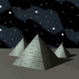

 |
| Heavens
mourn passing of our beloved Pharoah. |
|
|
Ramses
II had been suffering for some time from chronic illness brought on by
his extreme age. Unconfirmed reports from palace sources say that an infection
in the pharaoh's gums
was inflicting unbearable pain on our exalted ruler. The royal physicians
had been ministering to him round-the-clock to ease his pain and increase
his comfort during these last days. At long last, the mighty Osiris
saw fit to summon our pharaoh to his underworld realm and liberate his
soul from its earthly torment. No reports have been issued on the pharaoh's
last moments or words.
Ramses II is survived by many wives and children.
Among his family members who preceded him in death are his beloved great
royal wife Nefertari;
his other principal royal wife, Isetnofret; his illustrious son Khaemwaset,
magician, scholar, builder of many monuments, and High Priest of Ptah;
and at least 11 of his other sons.
Ramses II will be succeeded by Crown Prince Merneptah,
fourth son of Queen Isetnofret. Plans for Prince Merneptah's coronation
are pending while the more immediate concerns of Ramses's preparation
for burial are attended to.
|
 |